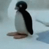

와 물이다~~~~~~
댓글
ㅋㅋㅋㅋㅋㅋ
오리둥절
물이 없는데 왜 더 안쪽으로 가냐 ㅋㅋㅋㅋ
저게 덕이냐 기스냐
기스 하워드!!
꽁꽁 얼어붙은 호수위를 오리들이 걸어갑니다
빡통쉑들ㅋㅋㅋㅋ
귀엽네 ㅋㅋ
왐마 이거 뭐꼬이거

오리둥절(사실거위임)
ㅋㅋㅋㅋㅋㅋ
오리둥절
물이 없는데 왜 더 안쪽으로 가냐 ㅋㅋㅋㅋ
저게 덕이냐 기스냐
기스 하워드!!
꽁꽁 얼어붙은 호수위를 오리들이 걸어갑니다
빡통쉑들ㅋㅋㅋㅋ
귀엽네 ㅋㅋ
왐마 이거 뭐꼬이거

오리둥절(사실거위임)
예수의 기적이네